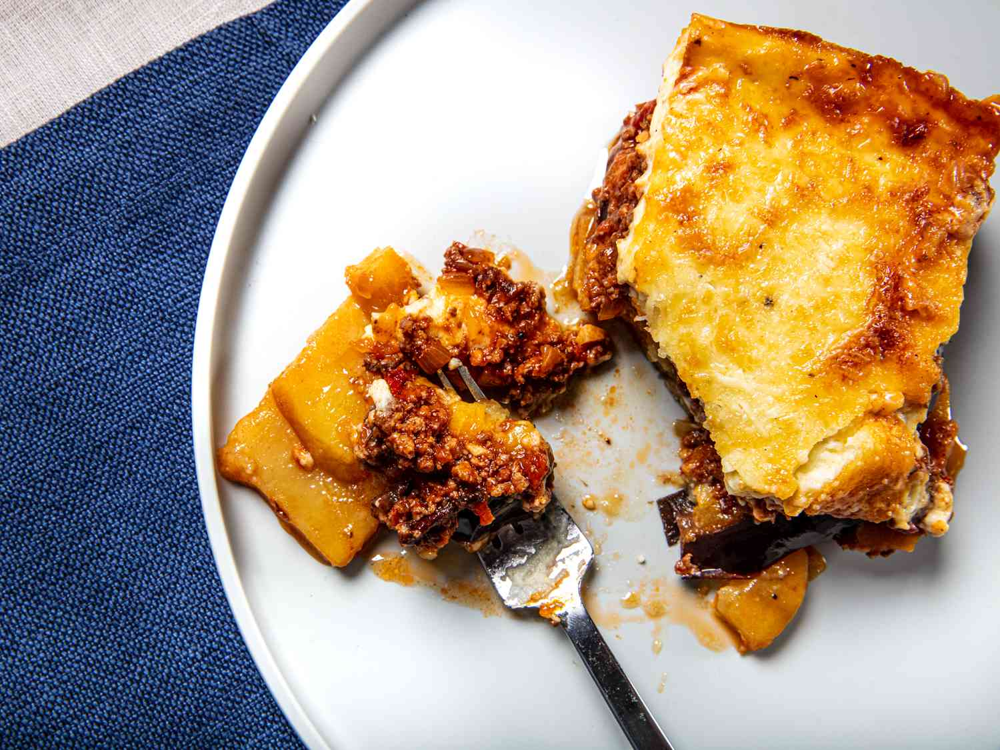

Home
Moussaka

Description
Slice 2–3 eggplants, salt 30 minutes, pat dry, brush with olive oil, and roast at 200°C until soft and golden.
Cook 500 g ground meat with chopped onion and garlic until browned. Add canned tomatoes, a splash of red wine (optional), salt, pepper, and a pinch of cinnamon. Simmer until thick.
Make béchamel: melt 50 g butter, stir in 50 g flour, slowly whisk in 600 ml milk until thick, season with salt, pepper, nutmeg, and mix in a handful of grated cheese.
Layer eggplant → meat → eggplant → béchamel in a baking dish.
Bake at 180°C for ~45 minutes until golden. Rest 20–30 minutes before cutting.
Ingredients
- 2–3 eggplants
- 500 g ground meat (lamb or beef)
- 1 onion
- 2–3 cloves garlic
- 1 can tomatoes (or ~400 g)
- Splash of red wine (optional)
- Olive oil
- Salt
- Black pepper
- Pinch of cinnamon
- Butter (~50 g)
- Flour (~50 g)
- Milk (~600 ml)
- Nutmeg (optional)
- Grated cheese (parmesan, pecorino, or similar)
Steps
- Slice eggplants, salt, pat dry, brush with olive oil, and roast.
- Cook ground meat with onion, garlic, tomatoes, wine, and spices until thick.
- Make béchamel by cooking butter, flour, milk, seasonings, and cheese.
- Layer eggplant, meat, eggplant, and béchamel in a baking dish.
- Bake at 180°C for 45–50 minutes and let rest before serving.